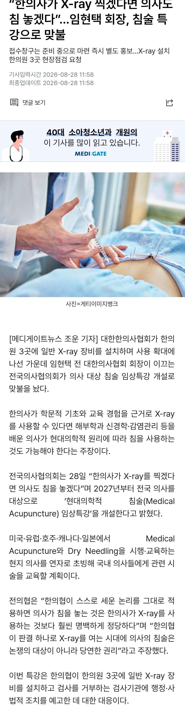

그래 그냥 다 하자 다해

그래 그냥 다 하자 다해
해봐 어디 ㅋㅋㅋㅋㅋㅋ
하다하다 지들이 급 낮다고 취급 안하던걸 지들이 하겠다고 협박을 하고있네 ㅋㅋㅋㅋㅋㅋㅋㅋ
병신새끼들
하든가 ㅋㅋㅋㅋ
이야 드디어 침술을 인정하는거냐 ㅋㅋㅋㅋ
침 놓고 할매 할배들 비위 맞춰줄순 있고?
환자 입장에서는 나쁠거 없지
하든가 ㅋㅋㅋ 뭐 어쩌라는
애초에 한의사가 x-ray 넘보는거부터 잘못된게 맞음
얘네가 진짜로 진단목적으로 x-ray를 쓰려는게 아니고
교육도제대로 안받고 대충 x-ray 찍고 어 뼈는 정상이니까 근육통이네요~ 하면서 도수치료나 이런거 해서 돈빨아먹으려고 하는거지
한의사가 x-ray찍겠다는데 찬성하는건 그냥 의사가 싫으니까 무지성으로 여론찬성하는거 뻔하지뭐
한의사는 뭐 어디 고스톱 쳐서 학위랑 면허땀?ㅋㅋㅋㅋㅋㅋ
한의학에서 x-ray 판독을 정식으로 배움? 수련받을때 배움? 병신인가
아 예 ㅋㅋ 레이져 딸깍도 의대에서 배운다잉?ㅋㅋ 의주빈 신원 증명 개쩌네 ㅋㅋㅋ
그래그래 무지성의사공무원경찰교사판사혐오 ㅇㅇ 이래야 개드립이지 ㅋㅋ
침은 한의원가서 맞을거야
하던거ㅋㅋㅋ 의사들은 왜 하나같이 유치하냐? 지들 단체행동 할때도 환자 돌보는 의사 실명 언급하면서 참의사라고 조리돌림하더만
한의원에서 x레이 찍음 -> 신뢰도 상승
병원에서 침놓음 -> 이새끼 뭐지?
국수도 좀 말아줘라 호로록~
한무당들 알바 풀었냐? ㅋㅋㅋㅋㅋㅋㅋㅋㅋㅋㅋㅋ
지금 한무당들 영업력이 죠스로 보이냐
ㅋㅋㅋㅋ 서로 협업해라 이제 ㅋㅋㅋㅋ